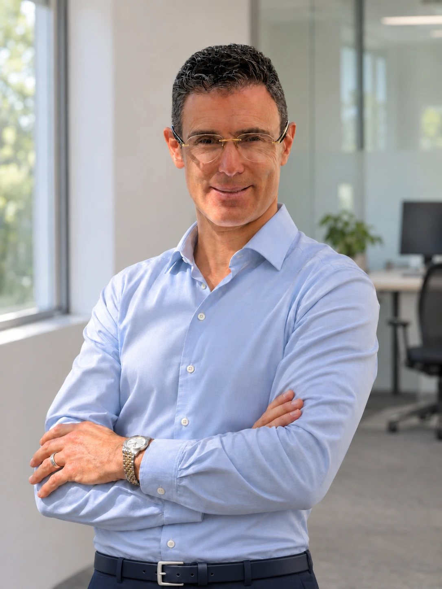
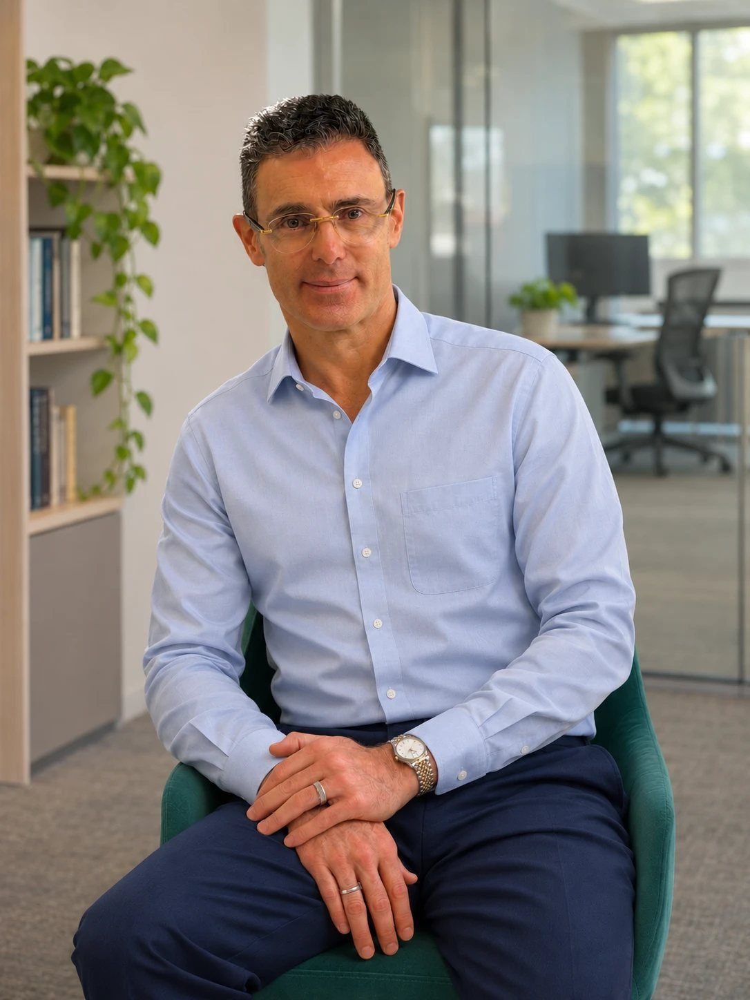
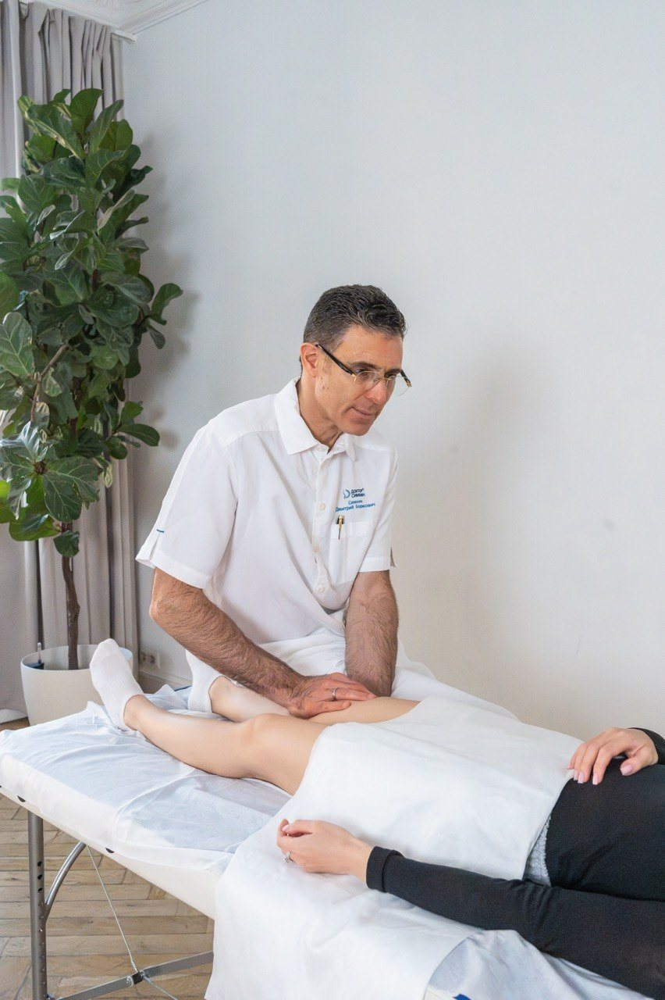

Врач-остеопат, эксперт по эргономике, автор «Системы эргономики Доктора Симкина»
Эргономика начинается с человека, а не с мебели
Более 35 лет я изучаю, как устроено и работает человеческое тело. Этот опыт стал основой моего подхода к эргономике: сначала необходимо понять особенности человека, его рабочую позу и выполняемые задачи, а уже затем подбирать и настраивать рабочее место.

Врачебная практика позволила мне увидеть, как повседневные привычки и организация рабочего места могут быть связаны с напряжением мышц, дискомфортом и утомлением.
Постепенно сформировалась авторская система, в которой эргономика рассматривается не как набор универсальных правил, а как способ адаптировать условия работы под конкретного человека.
Высшее медицинское образование и последующее профессиональное развитие сформировали основу моего подхода к работе с человеческим телом.
Окончание института
Санкт-Петербургская медицинская академия последипломного образования
Обучение по программе
Всероссийский конгресс под эгидой Минздрава России: представление авторского метода остеопатической диагностики
Региональная номинация премии «Лидеры остеопатии России», Санкт-Петербург
Я рассматриваю эргономику через взаимодействие человека с его рабочим окружением. Универсальной правильной позы или единственного подходящего всем рабочего места не существует: оптимальные условия зависят от особенностей тела, характера работы и используемого оборудования.
Правильная рабочая поза не должна требовать постоянного сознательного контроля и избыточного мышечного напряжения.
Практическая работа с пациентами и сотрудниками компаний неоднократно приводила меня к созданию собственных эргономичных решений. В 1996 году появилась одна из первых разработок для поддержки поясницы, в дальнейшем – другие изделия для адаптации условий работы и отдыха под особенности человека.

Средства поддержки поясницы, разработанные для использования в положении сидя.
Подробнее о поясничных подушках
Авторская разработка, учитывающая особенности положения головы и шеи во время сна.
Подробнее о подушке
Авторская разработка эргономичного компьютерного стола для организации рабочего пространства с учетом взаимодействия человека и оборудования.
Подробнее о разработке
Разработка, направленная на улучшение организации рабочего места при использовании ноутбука.
Подробнее о разработкеС 2004 года я провожу обучение и консультирование в области практической эргономики. Моя работа направлена на то, чтобы сотрудники не просто получали рекомендации, а понимали причины их возникновения и умели самостоятельно организовывать рабочие места.
Опыт сотрудничества включает российские и международные компании из разных отраслей
Я регулярно выступаю и комментирую вопросы, связанные с эргономикой, осанкой, здоровьем сотрудников и сохранением работоспособности. Особое внимание уделяю повседневным привычкам, организации рабочих мест и взаимосвязи условий труда с состоянием человека.

В 2009 году я основал Клинику остеопатии Доктора Симкина. Сегодня в клинике работают 10 врачей-остеопатов и специалисты других медицинских направлений, что позволяет комплексно подходить к вопросам здоровья пациентов.
В клинику приезжают пациенты из разных уголков России и многих стран мира. Для многих из них посещение клиники становится одной из целей поездки в Санкт-Петербург.
Многолетний опыт работы с пациентами помогает мне учитывать особенности человеческого тела при разработке эргономичных решений и образовательных программ.
Одно из направлений работы клиники с организациями
Медицинская помощь и эргономическое консультирование остаются разными направлениями деятельности.
Авторская система объединяет знания о теле, практический опыт и индивидуальный подход к организации рабочих мест. Вы можете познакомиться с системой самостоятельно или обсудить ее применение в вашей компании.
Оставьте номер телефона – перезвоним и ответим на ваши вопросы.
Расскажите коротко о задаче – свяжемся с вами, уточним детали и предложим подходящий формат работы.
Или напрямую:  Написать Дмитрию Симкину в Telegram
Написать Дмитрию Симкину в Telegram

Подписывайтесь на «Доктора Симкина»
Чтобы узнавать больше об эргономике, здоровье, работоспособности и привычках, которые влияют на наше самочувствие.